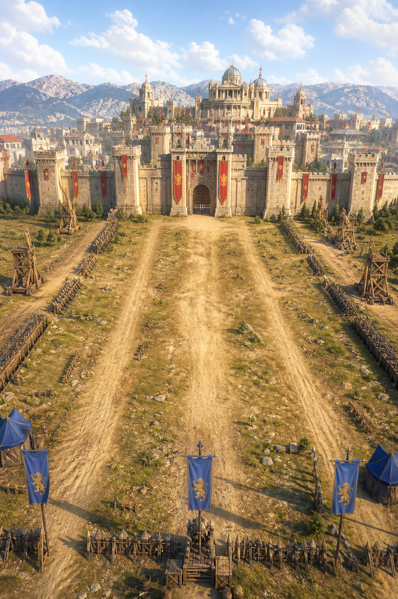

01 · GERÇEK ZAMANLI KUŞATMA
Dizilişi seç, ordunu yürüt, sur hattını parçala.
Piyade, okçu, süvari ve Şahi topu mangalarının tamamı görünür; birlikler mesafeyi kapatır, hedef bulur, saldırır, hasar alır ve savaşın sonucunu gerçekten belirler.